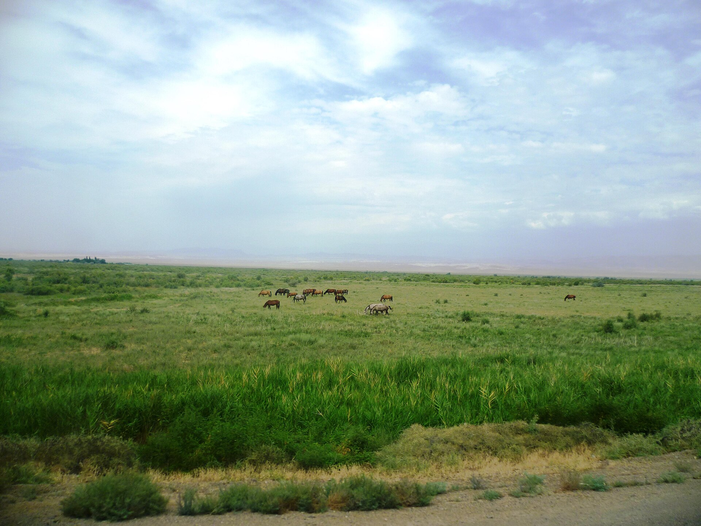

Traditional Kazakh Horse Riding
Kazakh horse culture is deeply connected to the history of Kazakhstan. Horses helped nomadic families travel across the steppe. They were also important for work, sport, communication, and celebrations. Today, horse riding remains an important part of Kazakh identity and tradition.
Important Historical Dates
- c. 3500 BCE - The Botai culture of northern Kazakhstan used horses.
- 1465 - The Kazakh Khanate was established.
- 1845 - Kazakh poet Abai Kunanbaiuly was born.
- 1991 - Kazakhstan became an independent country.
Interesting Facts
- Kazakh horses are known for their strength and endurance.
- Horses were traditionally used for transportation across the steppe.
- Kokpar is a traditional horseback game played in Central Asia.
- The horse is often seen as a symbol of freedom and pride.
- Horse racing is popular during festivals and celebrations.

A Traditional Kazakh Proverb
"Traditional knowledge about nature and the age-old relations between man and horse"
Learn more about Kazakhstan and its culture: Visit Kazakhstan